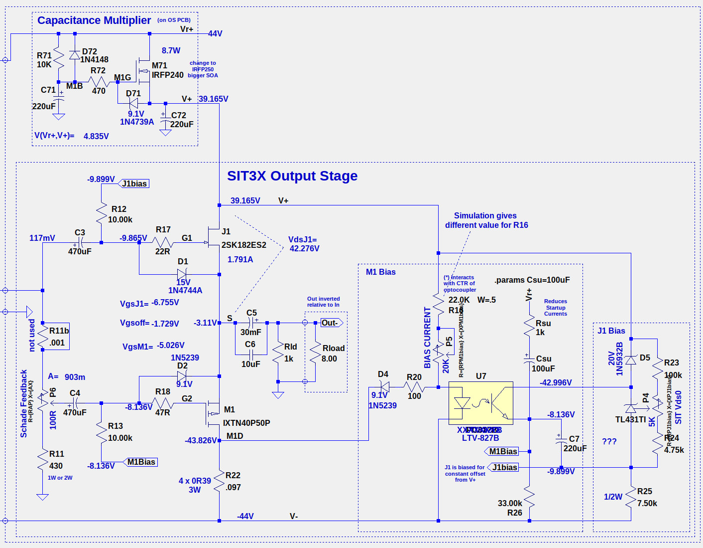
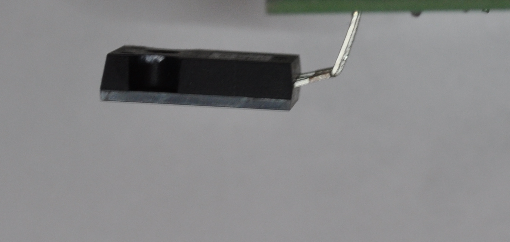

SIT3X Output Stage

Output Stage PC Boards
Parts choices:
In SIT3X-OS-20201227.BOM and you will find some parts that
have multiple choices.
P6 can be a simple single-turn or multi-turn 100R trimmer in
the OS PCB
or a 10-turn panel mounted precision
dial potentiometer.
C5 (output electrolytic) has multiple choices.
The only constraints are voltage, diameter, and
lead spacing.
C6 has a variety of lead spacings on the PCB. The BOM
shows the capacitor that I used.
M71 can be either an IRFP240 or and IRFP260.
Construction Details:
The 2SK182ES SIT must be insulated from the heatsink using sheet
mica and goop or anaother appropriate insulator. I used mica
and goop. The mounting screws must be insulated from the SIT
case. I used DigiKey RPC6397-ND shoulder washers, but there
might be better options. For the drain connection I used a
ring terminal for #16 or larger wires and a hole big enough that the
shoulder washer fits thru it and into the SIT mounting hole.
Thus the drain ring terminal contacts the case, but SIT case is
still insulated from the heatsink.
The M71 cap. multiplier FET should not be mounted to the PCB until
the PCB is first attached to the heatsink. The image in
SIT3X-Build-Guide/OS/M71-lead-bending.jpg shows how the FET leads
should be bent. Attach the FET to the heatsink with a suitable
insulator (silpad or mica and goop) and screw, with the FET leads
inserted into the PS PCB thru holes, ans solder the leads.
